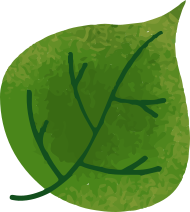
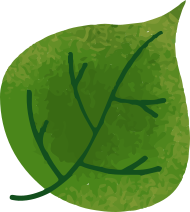

HISTÓRIA E CONEXÕES DA MATA ATLÂNTICA
Como aves e cavernas podem ajudar a contar o passado de um dos biomas mais diversos do mundo.

Como aves e cavernas podem ajudar a contar o passado de um dos biomas mais diversos do mundo.

 

A Mata Atlântica nem sempre foi solitária como conhecemos hoje. Ela é uma das três principais florestas úmidas da América do Sul, junto com a Floresta Amazônica e a Floresta Andina. Essas três florestas estão separadas pelas áreas mais secas e com poucas árvores dos biomas Caatinga, Cerrado e Chaco, que formam a chamada “diagonal seca”.
Apesar de não serem ligadas atualmente, essas florestas tropicais compartilham uma história: algumas de suas espécies de animais e plantas são muito próximas entre si. Esse parentesco pode indicar alguma ligação entre Mata Atlântica, Amazônia e Floresta Andina no passado?
Existe uma espécie de pássaro que pode ajudar a responder essa pergunta. O Trichothraupis melanops, conhecido como tiê-de-topete, é um passarinho de cara preta e topete amarelo que vive tanto na Mata Atlântica quanto na Floresta Andina.
Esse estudo, além de confirmar um parentesco entre os tiê-de-topete das duas florestas, concluiu que a rota por onde esses animais migraram foi num caminho entre o sul do Cerrado e o norte do Chaco, onde hoje está o Paraguai e o sul da Bolívia.
Outros estudos do projeto AF Biota também chegaram em rotas parecidas. Mais espécies de aves, lagartos e até plantas se dispersaram usando esta região, o que evidencia ainda mais uma possível conexão no passado.
Essa conexão entre biomas só foi possível porque o clima no planeta nem sempre foi o mesmo. De 2,5 milhões de anos atrás para cá, nosso planeta passou por períodos glaciais. A queda na temperatura e mudança na umidade foram condições importantes para definir o clima da América do Sul da época. A região onde hoje fica o centro-leste do Brasil teve um aumento no regime de chuvas durante esse período. Esse aumento da chuva deu as condições para que uma região seca passasse a ser úmida em poucas décadas. A vegetação mudou e a Floresta Atlântica expandiu, criando corredores de mata que se encontraram com as outras florestas úmidas da América do Sul.
Esse encontro pode ter sido bem recente e por mais de uma vez. Em 2013, um estudo comparou a presença e parentesco de um grupo de aves - chamados de suboscines - que estão presentes tanto na Mata Atlântica quanto na Amazônia. Os resultados apontaram para dois possíveis caminhos que um dia conectaram essas duas florestas: uma conexão recente na região nordeste do Cerrado - há cerca de 5,3 milhões de anos - e uma mais antiga, na região onde hoje é o sul do Cerrado e o Chaco (Bolívia e Paraguai) - há cerca de 14.5 milhões de anos.
Assim, essas três florestas úmidas têm muitas histórias compartilhadas. Diferentes momentos do passado que permitiram conexões, como os corredores que os tiês-de-topete e muitos outros seres vivos usaram como caminho para pular de um bioma para o outro.